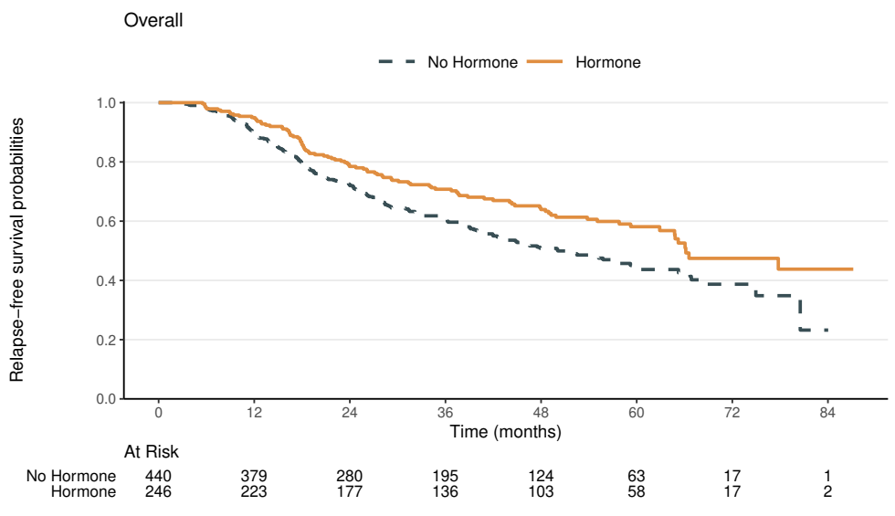

Applied Survival Analysis
Chapter 3 - Nonparametric Estimation and Testing
Department of Biostatistics & Medical Informatics
University of Wisconsin-Madison
Outline
- Nelsen–Aalen estimator of cumulative hazard
- Kaplan–Meier estimator of survival function
- Log-rank test and variations
- Analysis of the German Breast Cancer study
\[\newcommand{\d}{{\rm d}}\] \[\newcommand{\dd}{{\rm d}}\] \[\newcommand{\pr}{{\rm pr}}\] \[\newcommand{\var}{{\rm var}}\] \[\newcommand{\se}{{\rm se}}\] \[\newcommand{\indep}{\perp \!\!\! \perp}\]
Nelsen–Aalen Estimator
Nonparametric Approach
- Motivation
- Naive empirical distribution biased with censoring
- Parametric models constrained
- Weibull model \(\to\) monotone risk
- Nonparametric inference
- Estimation of \(S(t)=\pr(T >t)\)
- Comparison of survival function between groups
- Discrete hazard: a useful tool
Discrete Hazard: Set-up
- Observed data \[(X_i, \delta_i)\,\, (i=1,\ldots, n)\]

- \(0<t_1<\cdots<t_m\): unique observed event (failure) times (the \(X_i\) with \(\delta_i =1\))
- \(d_j\): number of observed failures at \(t_j\)
- \(n_j\): number of subjects at risk \(t_j\) (those with \(X_i\geq t_j\))
- \(n_{j-1} - n_j\): number of failures and censorings in \([t_{j-1}, t_j)\)
Discrete Hazard: Definition
- Counting process notation \[d_j = \sum_{i=1}^n \dd N_i(t_j)\, \mbox{ and }\,\, n_j = \sum_{i=1}^n I(X_i \geq t_j)\]
- Discretize distribution at observed event times \[t_1<t_2<\cdots<t_m\]
- Discrete hazard \[\dd\Lambda(t_j)=\pr(t_j \leq T < t_j+\dd t\mid T\geq t_j)=\pr(T = t_j\mid T\geq t_j)\]
- \(\dd\Lambda(t)\equiv 0\) otherwise
- Discrete hazard \[\dd\Lambda(t_j)=\pr(t_j \leq T < t_j+\dd t\mid T\geq t_j)=\pr(T = t_j\mid T\geq t_j)\]
Nelsen–Aalen Estimator (I)
Recall in Chapter 2…\[\begin{align} E\{\dd N(t)\mid X\geq t\}&=\frac{\pr\{\dd N^*(t)=1, C\geq t\}}{\pr(T\geq t, C\geq t)} \notag\\ &=\frac{\pr\{\dd N^*(t)=1\}\pr(C\geq t)}{\pr(T\geq t)\pr(C\geq t)} \notag\\ &=E\{\dd N^*(t)\mid T\geq t\}\notag\\ &=\dd\Lambda(t), \end{align}\]
- So \[\dd\Lambda(t_j) = E\{\dd N(t_j)\mid X\geq t_j\}=\frac{E\{\dd N(t_j)\}}{\pr(X\geq t_j)}\]
Nelsen–Aalen Estimator (II)
- Motivates empirical estimator \[\begin{align} \dd\hat\Lambda(t_j) & = \frac{d_j}{n_j} = \frac{\sum_{i=1}^n \dd N_i(t_j)}{\sum_{i=1}^n I(X_i\geq t_j)}\\ &=\mbox{proportion of failures among those at risk} \end{align}\]
- Cumulative hazard \[
\hat\Lambda(t)=\sum_{j:t_j\leq t}\frac{d_j}{n_j} =\int_0^t\frac{\sum_{i=1}^n \dd N_i(u)}{\sum_{i=1}^n I(X_i\geq u)}
\]
- Nelsen–Aalen estimator
- A step function (starting from 0) that jumps \(d_j/n_j\) at \(t_j\) \((j=1,\ldots, m)\)
Example: Rat Carcinogen Study (I)
- Carcinogenicity study: 100 rats treated with a drug
- Followed for tumor development
Example: Rat Carcinogen Study (II)
- Follow-up plot (sub-sample)

Example: Rat Carcinogen Study (III)
- “Hand” calculations

Example: Rat Carcinogen Study (IV)
- Visualization
Kaplan–Meier Estimator
From Hazard to Survival
- Continuous relationship \[ \tilde S(t)=\exp\left\{-\hat\Lambda(t)\right\} \]
- Discrete relationship (more general and intuitive)

Progressive Conditioning
- Surviving past \(t_j\): step by step \[\begin{align*} S(t_j)&=\pr(T>t_j)\\ &=\pr(T>t_1)\pr(T>t_2\mid T>t_1)\cdots\pr(T>t_j\mid T>t_{j-1})\\ &=\pr(T>t_1\mid T\geq t_1)\pr(T>t_2\mid T\geq t_2)\cdots\pr(T>t_j\mid T\geq t_j)\\ &=\prod_{l=1}^j\pr(T>t_l\mid T\geq t_l), \end{align*}\]
- Overall \[\begin{equation*} S(t)=\prod_{j:t_j\leq t}\pr(T>t_j\mid T\geq t_j) \end{equation*}\]
Kaplan–Meier Estimator
- Each conditional survival \[ \pr(T>t_j\mid T\geq t_j) = 1-\pr(T=t_j\mid T\geq t_j) = 1-\dd\Lambda(t_j) \]
- Plug-in Nelsen–Aalen \[\begin{equation}
\hat S(t)=\prod_{j:t_j\leq t}\{1-\dd\hat\Lambda(t_j)\}=\prod_{j:t_j\leq t}(1-d_j/n_j)
\end{equation}\]
- Kaplan–Meier (product-limit) estimator
- Reduces to empirical survival in the absence of censoring
- Adjusts for censoring by updating number at risk \(t_j\) over time
Kaplan–Meier Estimator: Variance (I)
- \(\var\{\hat S(t)\}\)?
Log-transform: product \(\to\) sum \[ \log\hat S(t)=\sum_{j:t_j\leq t}\log(1-d_j/n_j) \]
Delta method\(^*\) \[ \hat\var\{\hat S(t)\}=\hat S(t)^2\hat\var\{\log\hat S(t)\}, \]
Delta Method
If approximately \(S_n \sim N(\mu, \sigma^2)\), then approximately \(g(S_n) \sim N\left\{g(\mu), \dot g(\mu)^2\sigma^2\right\}\), where \(\dot g(\mu)=\dd g(\mu)/\dd\mu\).
Kaplan–Meier Estimator: Variance (II)
- \(\var\{\log\hat S(t)\}\)?
- With the \(n_j\) fixed, the \(d_j\) are independent (different subjects) \[\begin{align} \hat{\rm var}\{\log\hat S(t)\}&=\sum_{j:t_j\leq t}\hat{\rm var}\left[\log\{1-d_j/n_j\}\right]\notag\\ &\approx \sum_{j:t_j\leq t}\frac{n_j^2}{(n_j-d_j)^2}\hat{\rm var}(d_j/n_j)\tag{Delta method}\\ &=\sum_{j:t_j\leq t}\frac{d_j}{n_j(n_j-d_j)}, \end{align}\]
- Last equality: variance of binomial proportion \[ \hat{\rm var}(d_j/n_j)=(d_j/n_j)(1-d_j/n_j)/n_j \]
Kaplan–Meier Estimator: Variance (III)
Variance of KM \[\begin{equation}\label{eq:km:greenwood} \hat\var\{\hat S(t)\}=\hat S(t)^2\sum_{j:t_j\leq t}\frac{d_j}{n_j(n_j-d_j)} \end{equation}\]
- Greenwood’s formula
Naive 95% confidence interval (CI) \[\begin{equation}\label{eq:km:ci_plain} \left[\hat S(t)-1.96\hat\se\{\hat S(t)\}, \hat S(t)+1.96\hat\se\{\hat S(t)\}\right] \end{equation}\]
- May contain values outside \([0, 1]\)
- Bounded quantity approximated by unbounded (normal) distribution
Kaplan–Meier Estimator: CI
- Log-log transformed CI
Transform \(\zeta(t)=\log\{-\log S(t)\} \in \mathbb R\)
CI for \(\zeta(t)\) \[\begin{equation} \left[\hat\zeta(t)-1.96\hat\se\{\hat\zeta(t)\},\hat\zeta(t)+1.96\hat\se\{\hat\zeta(t)\}\right] \end{equation}\]
Transform the bounds back to \(S(t)\) \[ \left[\hat S(t)^{\exp[1.96\hat\se\{\hat\zeta(t)\}]}, \hat S(t)^{\exp[-1.96\hat\se\{\hat\zeta(t)\}]}\right] \subset [0, 1] \]
Remains to calculate \(\hat\se\{\hat\zeta(t)\}\) by delta method (Exercise)
Example: Rat Carcinogen Study (V)
- “Hand” calculations

Software: survival::survfit() (I)
- Basic syntax for fitting KM curve
- Input
Surv(time, status) ~ 1: fit curve to a homogeneous sampleSurv(time, status) ~ group: fit curve to each level ofgroup
data = df: input data framedfconf.type = "log-log": log-log transformation for CI"log": default log transformation"plain": naive CI
Software: survival::survfit() (II)
- Output: a
surfitobject containing KM estimates- Call
summary()andplot() summary(obj): a list containingtime: \(t_j\) \((j=1,\ldots, m)\)surv: \(\hat S(t_j)\)n.risk: \(n_j\)n.event: \(d_j\)std.err: \(\hat\se\{\hat S(t_j)\}\)...
- Call
Software: gtsummary::tbl_survfit()
- Customizable, publication-ready table
- Based on
survfit()results
- Based on
# install.packages("gtsummary")
library(gtsummary)
# A single-group KM model
obj <- survfit(Surv(time, status) ~ 1, data = df)
# Summaries at specific times
tbl_surv <- tbl_survfit(
x = obj, # Provide the fitted survfit object
times = seq(40, 100, by = 20), # Time points for survival rates
label_header = "{time} days" # Column label: "xx days"
)
# Print out the table
tbl_survSoftware: ggsurvfit::ggsurvfit()
- Enhanced KM plot
- Powered by
ggplot2
- Powered by
# install.packages("ggsurvfit")
library(ggsurvfit)
obj <- survfit(Surv(time, status) ~ 1, data = df)
# Create a KM plot with confidence intervals and an at-risk table
ggsurvfit(obj) +
add_confidence_interval() + # Shaded 95% CI region
add_risktable() + # Show risk table
scale_x_continuous(breaks = seq(0, 100, by = 20)) + # X-axis breaks
ylim(0, 1) + # Y-axis limits
labs(
x = "Time (days)",
y = "Tumor-free probabilities"
) +
theme_minimal()Example: Rat Carcinogen Study (VI)
- Data frame:
rats.rx- Check with Table 3.3
obj <- survfit(Surv(time, status) ~ 1, data = rats.rx,
conf.type = "log-log")
summary(obj)
# Call: survfit(formula = Surv(time, status) ~ 1, data = rats.rx,
# conf.type = "log-log")
#
# time n.risk n.event survival std.err lower 95% CI upper 95% CI
# 34 99 1 0.990 0.0100 0.930 0.999
# 39 98 1 0.980 0.0141 0.922 0.995
# 45 97 1 0.970 0.0172 0.909 0.990
# 67 89 1 0.959 0.0202 0.894 0.984
# 70 86 1 0.948 0.0228 0.879 0.978
# ...Example: Rat Carcinogen Study (VII)
- Plot the survival function (with 95% CI)
- Base
plot()
- Base
Example: Rat Carcinogen Study (VIII)
- Result
Log-Rank Test
Comparing Survival Rates
- Motivation: compare event rate across groups for treatment/exposure effect
- Example
- Rat study: 100 treated (analyzed) vs 200 untreated for tumor incidence
- GBC study: hormone vs non-hormone treatments for (relapse-free) survival
- Hypothesis \[\begin{equation}\label{eq:km:null}
H_0: S_1(t)=S_0(t) \mbox{ for all } t.
\end{equation}\]
- \(S_a(t) =\) survival function of \(T\) in group \(a\) (\(1\): treatment; \(0\): control)
Two-Group Comparison: Set-up
- Observed data \[\begin{equation}
\{(X_{1i},\delta_{1i}): i=1,\ldots, N_1\} \mbox{ and } \{(X_{0i},\delta_{0i}): i=1,\ldots, N_0\},
\end{equation}\]
- \((X_{ai},\delta_{ai})\) \((i=1,\ldots, N_a)\): a random sample of \((X,\delta)\) in group \(a\)

- \(n_{1j}\), \(n_{0j}\): numbers at risk in groups 1 and 0 at \(t_j\) (totaling \(n_j = n_{1j} + n_{0j}\) at risk)
- \(d_{1j}\), \(d_{0j}\): numbers of events in groups 1 and 0 at \(t_j\) (totaling \(d_j = d_{1j} + d_{0j}\) events)
- \((X_{ai},\delta_{ai})\) \((i=1,\ldots, N_a)\): a random sample of \((X,\delta)\) in group \(a\)

Two-Group Comparison: Contingency
- Fixing \(d_j\) (total # uninformative of group difference)

Two-Group Comparison: Log-rank (I)
- Contingency table \((2\times 2)\)
- \(H_0\): No association between event occurence vs group affiliation
- Event occurs in proportion to number at risk \[\begin{align} R_j&=d_{1j}-d_j\frac{n_{1j}}{n_j}\\ &=\mbox{(Observed events)} - \mbox{(Expected events)} \end{align}\]
- \(R_j > 0\): higher incidence in treatment; \(R_j < 0\): higher incidence in control
- \(E(R_j\mid d_j, n_{1j}, n_{0j})\stackrel{H_0}{=}0\)
- \(\var(R_j\mid d_j, n_{1j}, n_{0j})\stackrel{H_0}{=:} V_j\) by hypergeometric distribution
Two-Group Comparison: Log-rank (II)
- Testing overall incidence \[\begin{equation}\label{eq:km:logrank_stat}
S_{N_1,N_0}=\frac{(\sum_{j=1}^m R_j)^2}{\sum_{j=1}^m V_j}\stackrel{H_0}{\sim} \chi_1^2
\end{equation}\]
- \(\hat\var(\sum_{j=1}^m R_j)=\sum_{j=1}^m V_j\) by conditioning (martingale) arguments
- Uncorrelated increments
- Reject \(H_0\) if \[S_{N_1,N_0}>\chi_1^2(1-\alpha)\]
- \(\chi_1^2(1-\alpha)\) is the \(100(1-\alpha)\)th percentile of \(\chi_1^2\)
- Log-rank test (with significance level \(\alpha\))
- \(\hat\var(\sum_{j=1}^m R_j)=\sum_{j=1}^m V_j\) by conditioning (martingale) arguments
Two-Group Comparison: Log-rank (III)
- Alternative hypothesis \[\begin{equation}\label{eq:km:logrank_alter}
H_A: \lambda_1(t)\leq\lambda_0(t)\mbox{ for all } t \mbox{ with strict inequality for some }t
\end{equation}\]
- Ordered hazards: treatment consistently lowers risk over time compared to control (or vice versa) \[\pr\left\{S_{N_1,N_0}>\chi_1^2(1-\alpha)\right\}\stackrel{H_A}{\to} 1 \mbox{ as } n\to\infty\]
- \(\sum_{j=1}^m R_j =\) Weighted difference of group-specific Nelsen–Aalen estimates of hazard functions (Section 3.2.2)
- Crossing hazards \(\to\) weak power
Log-Rank Extension: Multiple Groups
- \(K\) groups \((k = 0, 1, \ldots, K-1)\) \[\begin{equation}\label{eq:km:logrank_mult}
\gamma=\sum_{j=1}^m\left(d_{1j}-d_j\frac{n_{1j}}{n_j},d_{2j}-d_j\frac{n_{2j}}{n_j},\ldots, d_{K-1,j}-d_j\frac{n_{K-1,j}}{n_j}\right)^{\rm T}
\end{equation}\]
- \(t_1<\cdots<t_m\): unique event times pooled across \(K\) groups
- \(d_{kj}, n_{kj}\): numbers of failed and at-risk subjects in group \(k\) at \(t_j\)
- Test statistic \[ \gamma^{\rm T}\var(\gamma)^{-1}\gamma\stackrel{H_0}{\sim}\chi_{K-1}^2 \]
- Alternative hypothesis: exist two groups with ordered hazards
Log-Rank Extension: Stratification
- Stratification: compare groups only within same stratum
- Race/ethnicity, sex, age group, study center
- Adjust for confounder
- Statistical efficiency
- Test statistic
- Calculate and aggregate stratum-specific \(\sum_{j=1}^m R_j\)
- Alternative hypothesis: ordered hazards (same order) across strata
Log-Rank Extension: Weighting (I)
- Weight \(w_j\) at time \(t_j\): \[\begin{equation}\label{eq:eq:km:ej_w}
\frac{(\sum_{j=1}^{m} w_jR_{j})^2}{\sum_{j=1}^{m} w_j^2V_{j}} \stackrel{H_0}{\sim} \chi_1^2
\end{equation}\]
- Log-rank: \(w_j\equiv 1\)
- Gehan: \(w_j = n_j/n\)
- Harrington-Fleming (HF) \(G^\rho\) family: \(\hat S(t_j-)^\rho\) \((\rho\geq 0)\)
- \(\hat S(t_j-)\): KM estimate based on pooled sample
- Extended to \(G^{\rho,\gamma}\) family: \(\hat S(t_j-)^\rho\{1-\hat S(t_j-)\}^\gamma\) \((\rho, \gamma \geq 0)\)
Log-Rank Extension: Weighting (II)
- Choice
- Pre-specify to avoid bias
- Decreasing weights: sensitive to early effects
- Increasing weights: sensitive to delayed effects
- Constant weight (default): optimal for proportional hazards alternative \[ H_A^{\rm PH}:\lambda_1(t)=\exp(\theta)\lambda_0(t) \mbox{ for all } t \]
Software: survival::survdiff()
- Basic syntax for log-rank test
- Input
Surv(time, status) ~ group: test survival function between levels of variablegroupstrata(str_var): stratified by variablestr_var(optional)rho = r: weights \(\hat S(t_j-)^\rho\) with \(\rho=\)r
- Output: a list containing
pvalue(p-value of the test)
Software: gtsummary::tbl_survfit()
- Multi-group tabulation
library(gtsummary)
# A two-group KM model
obj <- survfit(Surv(time, status) ~ rx, data = rats)
# Summaries at specific times with labeled treatment groups
tbl_surv <- tbl_survfit(
x = obj, # Provide the fitted survfit object
times = seq(40, 100, by = 20), # Time points for survival rates
label_header = "{time} days", # Column label: "xx days"
label = list(rx ~ "Treatment") # Rename 'rx' to 'Treatment'
)
# Print out the table
tbl_survSoftware: ggsurvfit::ggsurvfit()
- Multi-group KM graphics
library(ggsurvfit)
# Use survfit2 as recommended by ggsurvfit
obj2 <- survfit2(Surv(time, status) ~ rx, data = rats)
# Create a group-specific KM plot with log-rank test p-value
ggsurvfit(obj, linetype_aes = TRUE, linewidth = 1) + # Use line types
add_risktable(
risktable_stats = "n.risk", # Include only numbers at risk
theme = list(
theme_risktable_default(), # Default risk table theme
scale_y_discrete(labels = c('Drug', 'Control')) # Group labels
)
) +
theme_classic() Example: Rat Carcinogen Study (IX)
- Log-rank test by
rxstratified bysex
head(rats)
# litter rx time status sex
# 1 1 1 101 0 f
# 2 1 0 49 1 f
# 3 1 0 104 0 f
# ...
survdiff(Surv(time, status) ~ rx + strata(sex), data = rats)
# Call:
# survdiff(formula = Surv(time, status) ~ rx + strata(sex), data = rats)
#
# N Observed Expected (O-E)^2/E (O-E)^2/V
# rx=0 200 21 28.9 2.16 6.99
# rx=1 100 21 13.1 4.77 6.99
#
# Chisq= 7 on 1 degrees of freedom, p= 0.008 Application: German Breast Cancer Study
Baseline Characteristics
- 686 patients with primary node positive breast cancer
Relapse-Free Survival: Overall
- Endpoint: the earlier of relapse or death 
Relapse-Free Survival: Subgroups
- Menopausal status: pre- vs post-menopausal


Hormone Treatment Effect
- Hormonal therapy
- Stratified by menopausal status
- Result
- \(\chi_1^2=\) 9.5 with p-value 0.002
- Adjusting for menopausal status, hormonal therapy has a highly significant beneficial effect on relapse-free survival in breast cancer patients
- Unadjusted test result similar
- \(\chi_1^2=\) 9.5 with p-value 0.002
Conclusion
Notes
- Kaplan and Meier (1958)
- 60k + citations by Feb 2026
- Most cited statistical paper of all time
- Derivation of log-rank
- Mantel–Haenszel (1959) analysis of \(2\times 2\) contingency tables stratified by \(t_j\)
- Other tests
- Gehan
npsm::gehan.test() - Max-combo
nph::logrank.maxtest()(maximum over multiple weighting schemes)
- Gehan
Summary (I)
- Discrete hazard: \(\dd\Lambda(t_j)= d_j/n_j\)

- Proportion of failures among those at risk
- Kaplan–Meier \[\begin{equation}
\hat S(t)=\prod_{j:t_j\leq t}\{1-\dd\hat\Lambda(t_j)\}=\prod_{j:t_j\leq t}(1-d_j/n_j)
\end{equation}\]
survival::survfit():
Summary (II)
- Log-rank test: multi-group comparison
- \(K\) groups \(\to\) \(K-1\) degrees of freedom
- Stratification: adjust for confounding
- Weighting: optimality depends on effect pattern over time
survival::survdiff()
- Enhanced tabulation and graphics
gtsummary::tbl_survfit()ggsurvfit::ggsurvfit()
HW2 (Due Feb 18)
- Choose one
- Problem 3.4
- Problem 3.5
- Problem 3.23
- (Extra credit) Choose one
- Problem 3.19
- Problems 3.21 and 3.22